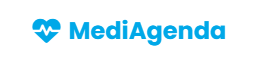
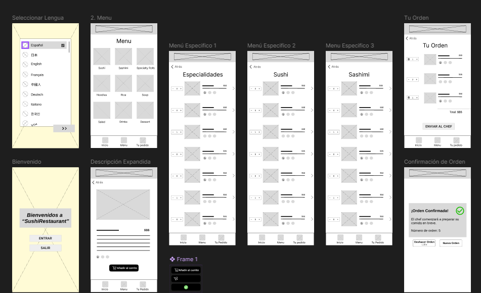
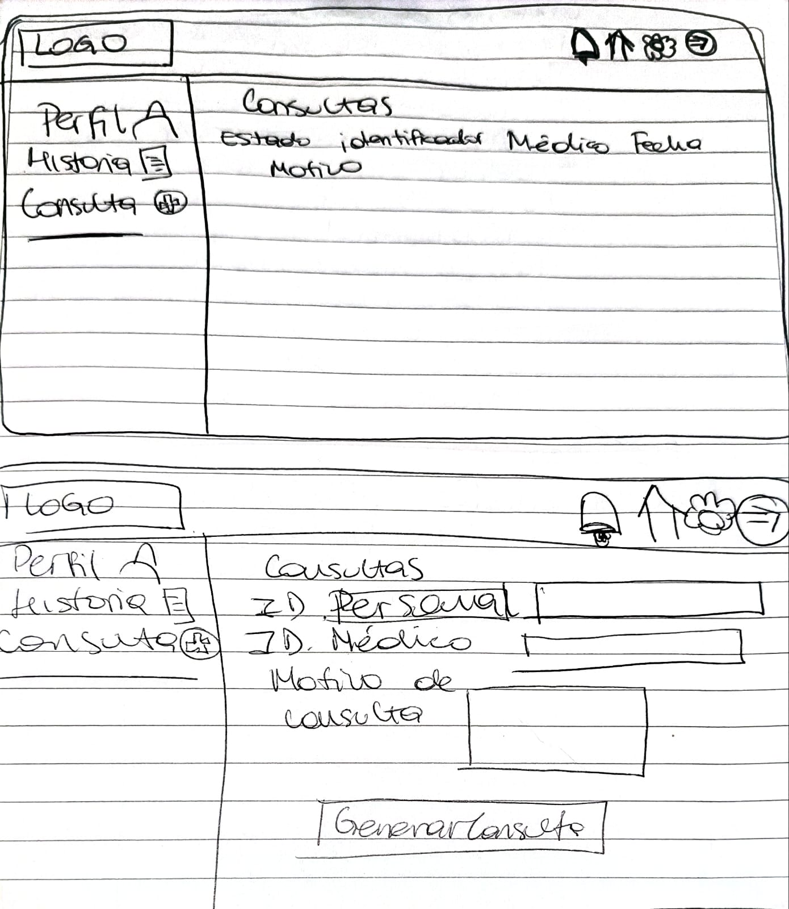
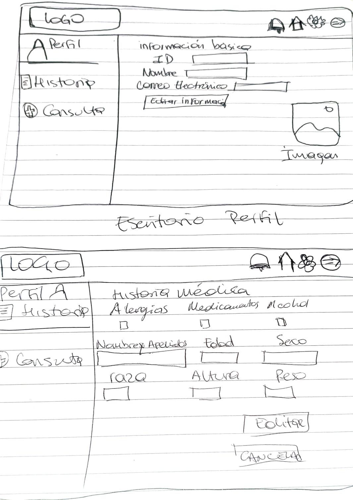

My UX Projects

MediAgenda
Plataforma web para agendar citas médicas de forma intuitiva y sencilla en Uruguay.
Ver Caso de Estudio

Design Process
Check out my UX design methodology from research to high-fidelity prototypes.
Learn MoreMediAgenda - Plataforma de Agendamiento Médico
Visión General del Proyecto
MediAgenda es una plataforma web diseñada para ayudar a las personas en Uruguay a encontrar y agendar citas médicas de forma intuitiva y sencilla. El objetivo principal es eliminar las barreras tradicionales en el proceso de agendamiento médico, ofreciendo una experiencia digital fluida y accesible para todos los usuarios.
Desafío
El sistema tradicional de agendamiento médico en Uruguay presenta varios problemas: largas esperas telefónicas, horarios limitados para agendar y falta de información centralizada sobre disponibilidad de médicos. MediAgenda busca resolver estos problemas mediante una plataforma digital que centralice toda la información y simplifique el proceso.
Solución
Desarrollamos una plataforma web responsive que permite a los usuarios:
- Buscar médicos por especialidad, ubicación o mutualista
- Ver perfiles detallados de los médicos con su formación y experiencia
- Consultar disponibilidad en tiempo real
- Agendar citas médicas con pocos clics
- Gestionar todas sus citas desde un perfil personal
Proceso de Diseño
El proyecto siguió un proceso de diseño centrado en el usuario:
- Investigación de usuarios y análisis de competencia
- Definición de user personas y journey maps
- Wireframing y arquitectura de información
- Diseño de prototipos en Figma
- Pruebas de usabilidad e iteraciones
- Implementación final con HTML, CSS y JavaScript
Mi Metodología de Diseño
Para el desarrollo de MediAgenda, implementé un enfoque de degradación progresiva, comenzando con el diseño completo para escritorio y adaptándolo posteriormente a dispositivos más pequeños.
Diseño para Escritorio
Desarrollo completo de la experiencia en pantallas grandes
Adaptación para Tablets
Reorganización de elementos manteniendo funcionalidades
Optimización para Móviles
Simplificación de la interfaz priorizando contenido esencial
Beneficios del Enfoque
- Diseño completo desde el inicio
- Mantenimiento de funcionalidades clave
- Adaptación progresiva a cada dispositivo
- Experiencia coherente en todas las plataformas
Diseño Inicial
Adaptación
Optimización
A diferencia del enfoque "mobile-first", la degradación progresiva comienza con la experiencia más completa (escritorio) y luego adapta para dispositivos más pequeños.
¿Por qué elegí este enfoque?
Opté por la degradación progresiva por varias razones estratégicas:
- Visualización completa: El diseño de escritorio permite visualizar todas las funcionalidades y contenidos desde el inicio.
- Priorización de contenido: Al adaptar a dispositivos más pequeños, pude tomar decisiones informadas sobre qué elementos priorizar.
- Coherencia visual: Este enfoque me permitió mantener una identidad visual coherente a través de todos los dispositivos.
- Eficiencia en desarrollo: Resultó más eficiente adaptar desde una versión completa que expandir desde una versión limitada.
Este método fue particularmente adecuado para MediAgenda, donde la visualización de información médica detallada es crucial en pantallas grandes, pero necesita ser accesible y funcional en dispositivos móviles.
Prototipos y Resultado Final


Wireframes iniciales

Prototipo de alta fidelidad en Figma

Implementación final
Resultados y Aprendizajes
La plataforma MediAgenda logra simplificar significativamente el proceso de agendamiento médico, reduciendo el tiempo necesario para encontrar y agendar una cita. Las pruebas con usuarios mostraron una alta satisfacción y una tasa de éxito del 95% en la completitud de tareas.
Enlaces del Proyecto
Sushi App Case Study
Project Overview
This project involved creating a seamless ordering experience for a fictional sushi restaurant chain.
Key Screens


Figma Prototype Sushi Web
Figma Prototype App Sushi
Website
My Design Methodology
Detailed explanation of your design process...
← Back to Projects